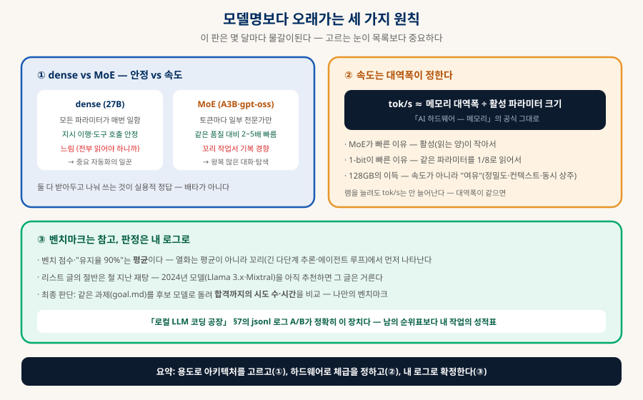
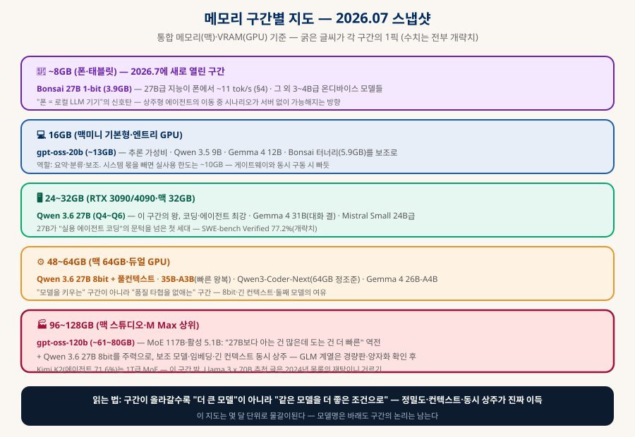
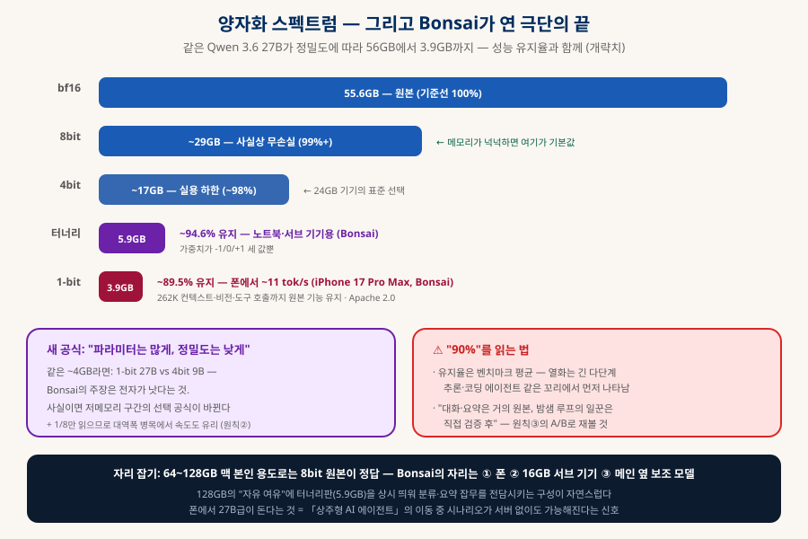

현실적으로 사용하기 좋은 로컬 LLM
메모리 구간별 지도 — 폰의 3.9GB부터 맥 128GB까지
"지금 뭘 받아야 하나"에 대한 2026년 7월의 스냅샷. 16GB부터 128GB까지 구간별 1픽, 주요 모델(Qwen 3.6 · gpt-oss · Gemma 4 · GLM)의 성격 해부, 그리고 폰에서 27B급을 돌리는 극단 양자화(Bonsai)까지 — 목록은 몇 달마다 바래므로, 목록과 함께 "고르는 눈"을 남기는 문서다.
0. 한눈에 보기 — 구간별 1픽
급한 사람을 위한 결론 — 근거는 §2~4에서
이 구간의 왕 — 코딩·에이전트
또는 35B-A3B (속도)
+ 보조 모델 동시 상주
2026.7에 새로 열린 구간
1. 모델명보다 오래가는 세 가지 원칙
목록이 바래도 고르는 눈은 남는다

① dense vs MoE — 안정과 속도의 저울. dense(27B급)는 모든 파라미터가 매 토큰 일하므로 지시 이행·도구 호출이 안정적이고, MoE(35B-A3B, gpt-oss)는 토큰마다 일부 전문가만 활성화돼 같은 품질 대비 2~5배 빠르지만 까다로운 꼬리 작업에서 기복이 있다는 평이 흔하다. 정답은 택일이 아니라 분업 — 중요 자동화는 dense, 왕복 많은 대화·탐색은 MoE.
② 속도는 대역폭이 정한다. 로컬 추론의 tok/s ≈ 메모리 대역폭 ÷ 활성 파라미터 크기 (「AI 하드웨어 — 메모리」). MoE가 빠른 이유(활성이 작다), 1-bit이 빠른 이유(같은 파라미터를 1/8로 읽는다), 그리고 램을 128GB로 늘려도 속도는 안 늘어나는 이유(대역폭이 같으니까)가 전부 이 한 줄에서 나온다. 큰 메모리의 진짜 이득은 속도가 아니라 여유다 — 높은 정밀도, 긴 컨텍스트, 보조 모델 동시 상주.
③ 벤치마크는 참고, 판정은 내 로그로. 순위표 점수와 "유지율 90%" 같은 숫자는 전부 평균이고, 열화는 평균이 아니라 꼬리(긴 다단계 추론·에이전트 루프)에서 먼저 나타난다. 게다가 검색되는 추천 글의 절반은 철 지난 재탕이다 — 2024년 모델(Llama 3.x 70B·Mixtral)을 아직 1순위로 추천하는 글은 거르는 것이 가장 쉬운 판별법. 최종 판단은 §6의 자기 벤치마크로 한다.
2. 메모리 구간별 지도 — 폰부터 128GB까지
통합 메모리(맥)·VRAM(GPU) 공통 — 구간의 논리는 모델명보다 오래간다

| 구간 | 추천 (굵게 = 1픽) | 이 구간의 논리 |
|---|---|---|
| ~8GB (폰) | Bonsai 27B 1-bit (3.9GB) · 3~4B급 온디바이스 | 2026.7에 새로 열린 구간(§4) — 폰에서 27B급 지능 ~11 tok/s |
| 16GB | gpt-oss-20b (~13GB) · Qwen 3.5 9B · Gemma 4 12B | 보조역·요약·분류. 시스템 몫 빼면 실사용 ~10GB — 욕심 금지 구간 |
| 24~32GB | Qwen 3.6 27B (Q4~Q6) · Gemma 4 31B · Mistral Small 24B급 | "실용 에이전트 코딩"의 문턱을 처음 넘은 체급 — 가성비의 중심 |
| 48~64GB | Qwen 3.6 27B 8bit·풀컨텍스트 · 35B-A3B · Qwen3-Coder-Next · Gemma 4 26B-A4B | 품질 타협을 없애는 구간 — 8bit·긴 컨텍스트·둘째 모델 |
| 96~128GB | gpt-oss-120b (~61~80GB) + 27B 8bit 주력 병행 · GLM 계열(경량판 확인) | MoE 대형이 열리고, 무엇보다 "동시 상주"가 자유로워지는 구간 |
3. 주요 모델 해부 — 각자의 성격
점수가 아니라 "결"로 고르는 것이 실사용의 감각이다
| 모델 (개략) | 구조·크기 | 성격과 평판 |
|---|---|---|
| Qwen 3.6 27B | dense · 8bit ~29GB · 비전 내장 | 로컬 코딩·에이전트의 현 최강 — SWE-bench Verified 77.2%(개략치)로 전 세대 수백B급을 추월. "코딩 중심 로컬 배포는 Qwen이 실증적 최강"이 중론 |
| Qwen 3.6 35B-A3B | MoE · 활성 3B · ~37GB(8bit) | 27B의 속도 보완재 — 활성이 작아 왕복이 훨씬 빠름. 품질은 작업별 기복이 있으니 A/B 후 채택 |
| Qwen3-Coder 계열 | 코딩 특화 · 256K 컨텍스트 | Coder-Next가 64GB급을 정조준. 긴 컨텍스트가 강점 — 대형 코드베이스 작업용 |
| gpt-oss-120b | MoE 117B · 활성 5.1B · ~61~80GB | "27B보다 아는 건 많은데 도는 건 더 빠른" 역전 — MoE 희소성의 교과서. 추론(reasoning) 강점, Apache 2.0. 코딩 에이전트 벤치는 Qwen 우세 |
| gpt-oss-20b | MoE · ~13GB | 16GB 구간의 추론 가성비 픽 |
| Gemma 4 (31B·26B-A4B·12B) | dense + MoE 라인업 | 벤치보다 "대화 결이 좋다"는 평 — 범용·글쓰기용. 제약 적은 라이선스 |
| GLM-5.2 계열 | 대형 MoE | 에이전트 코딩에서 Qwen과 선두 다툼이라는 평가. 본가는 대형 — 128GB에선 경량판·양자화 가능 여부를 받는 시점에 확인 |
| Kimi K2 | 1T급 MoE | 에이전트 71.6%(멀티어템프트)로 최상위지만 128GB 밖의 물건 — 참고용 |
4. 극단 양자화 — Bonsai 27B, 폰에서 도는 27B급
2026.7.14 공개 — 양자화 스펙트럼의 끝이 새 구간을 열었다
PrismML이 공개한 Bonsai 27B는 Qwen3.6-27B를 BitNet 계열 극단 양자화로 압축한 것이다 — 가중치를 1비트(±1) 또는 3진값(-1/0/+1)까지 밀어붙여, 27B 파라미터가 3.9GB(1-bit)까지 줄어든다. 주목할 점은 압축하면서도 262K 풀 컨텍스트·비전·도구 호출·에이전트 루프까지 원본 기능을 전부 유지했다는 것 (Apache 2.0, GGUF·MLX·AWQ 전부 공개).

| Bonsai 변형 | 크기 · 유지율 (개략) | 자리 |
|---|---|---|
| 1-bit | 3.9GB · ~89.5% | 폰 — iPhone 17 Pro Max에서 ~11 tok/s. "폰 = 로컬 LLM 기기"의 신호탄 |
| 터너리(3진) | 5.9GB · ~94.6% | 노트북·16GB 서브 기기, 또는 큰 맥에서 잡무 전담 보조 모델 |
함의 — "파라미터는 많게, 정밀도는 낮게". 같은 ~4GB 예산이면 1-bit 27B와 4bit 9B 중 무엇이 나은가 — Bonsai의 주장은 전자다. 이것이 재현되면 저메모리 구간의 선택 공식 자체가 바뀐다. 덤으로 읽을 가중치가 1/8이라 대역폭 병목(§1-②)에서 속도까지 유리하다.
5. 용도별 최종 추천
"무엇에 쓸 것인가"가 메모리보다 먼저다
⌨️ 코딩 에이전트 주력
Qwen 3.6 27B — 이견이 적은 1픽. 대형 코드베이스·긴 컨텍스트면 Qwen3-Coder 계열(256K), 도전적 대안으로 GLM-5.2 경량판. 「로컬 LLM 코딩 공장」의 일꾼 자리.
🏠 상주 비서·빠른 왕복
35B-A3B 또는 gpt-oss-120b(메모리 되면) — 활성 파라미터가 작아 메신저 왕복·백그라운드 작업이 경쾌하다. 「상주형 AI 에이전트」의 두뇌 자리.
💬 범용 대화·글쓰기
Gemma 4 31B / 26B-A4B — 점수보다 결. 요약·초안·일상 질문의 기본기가 편안하다는 평.
📱 폰·서브 기기
Bonsai 27B(1-bit/터너리) 또는 gpt-oss-20b — 온디바이스와 16GB 구간의 새 기준선. 잡무 전담 보조 모델로도.
6. 직접 검증하는 법 — 나만의 벤치마크
남의 순위표는 후보 선정까지, 채택은 내 성적표로
방법은 「로컬 LLM 코딩 공장」 §7에 만들어둔 그대로다: 같은 과제(goal.md)를 후보 모델들로 돌리고, jsonl 로그에서 합격까지의 시도 수·게이트 통과율·소요 시간을 비교한다. 코딩 외 용도라면 「LLM-as-a-Judge」의 쌍대 비교(같은 프롬프트 → 두 모델 답변 → 심판이 A/B, 순서 뒤집어 2회)가 가장 간단한 도구다. 30분이면 되는 이 절차가, 몇 달마다 바뀌는 순위표 논쟁을 내 작업 기준의 확정 답으로 바꿔준다.
7. 출처
순위·수치는 빠르게 바뀐다 — 읽는 시점에 재확인
- BenchLM — Best Local LLMs by VRAM Tier (2026.07) §2. 구간별 추천의 교차 확인 출처.
- Morph — Best Open Source LLMs 2026 §3. Qwen·GLM 에이전트 코딩 선두 평가, MoE 활성 파라미터 정리.
- TokenMix — GPT-OSS-120B Review §3. gpt-oss-120b의 희소성·요구 메모리·성격.
- MarkTechPost — PrismML Bonsai 27B 공개 §4. 1-bit 3.9GB(~89.5%)·터너리 5.9GB(~94.6%)·262K 컨텍스트의 1차 보도.
- PrismML — Bonsai 27B 공식 발표 §4. 변형·라이선스·배포 포맷(GGUF·MLX·AWQ).
- InsiderLLM — Best Local LLMs for Mac 2026 §1·§2. "대역폭이 tok/s를 정한다" 등 맥 특화 관찰.